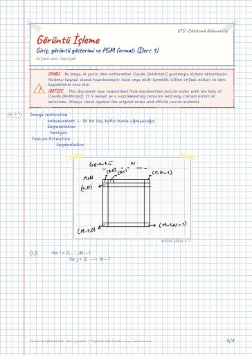
Giriş, görüntü gösterimi ve PGM formatı (Ders 1)
Connectivity (bağlılık)
Image Processing — lecture notes, homework, lab reports, and projects at Gebze Technical University (GTU) Electronics Engineering
Sayısal görüntü temelleri, nokta işlemleri ve histogram, uzamsal filtreleme, morfolojik işlemler ve bölütleme; Python laboratuvarları ve trafik işareti tespiti projesi.
Digital image fundamentals, point operations and histograms, spatial filtering, morphological operations and segmentation; Python labs and a traffic-sign detection project.
Bu sayfada: Ders Notları Dijital Notlar (LaTeX) Ödevler Laboratuvar Projeler GitHub Depoları Kaynak Kitaplar
El yazısı notların LaTeX ile yazılmış, aranabilir dijital versiyonları. Şablon ve derleme: latex-sablon.

Connectivity (bağlılık)
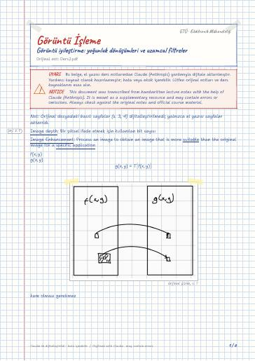
Sharpening Spatial Filters
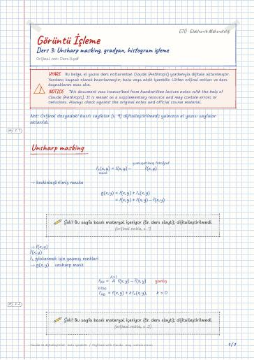
Unsharp masking · Gradient of f(x,y) · Histogram Processing · Histogram Equalization · Histogram Matching
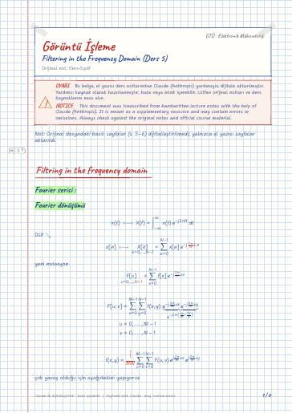
Filtring in the frequency domain · Fourier serisi · Fourier dönüşümü
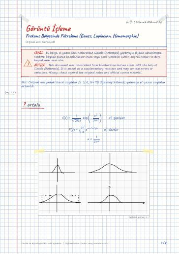
ortala · Laplacian · Zero padding · Unsharp masking · Homomorphic Filtering
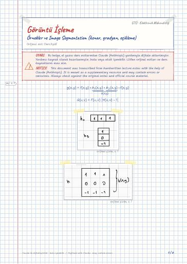
Image Segmentation · Basic Intensity Tresholding
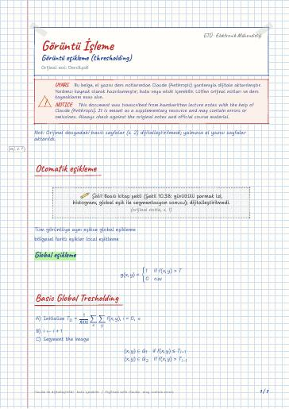
Otomatik eşikleme · Global eşikleme · Basic Global Tresholding · Variable Tresholding based on local image processing · Otsu Tresholding · Normalized histogram p(i)
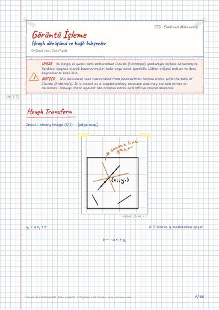
Hough Transform · Örnek · Connected Component · Recursive Connected Component labeling
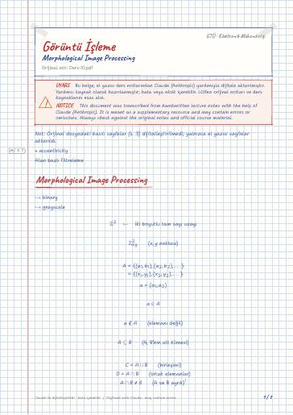
Morphological Image Processing · Dilation operator · Erosion · Opening and Closing · Hole filling
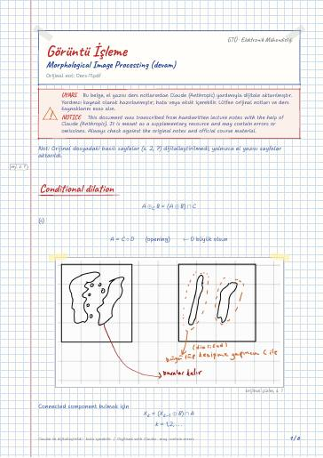
Conditional dilation · Reflection of h
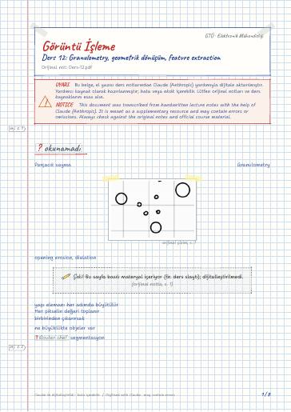
Geometric Transformasyon · Geometric Transformation · Gray level interpolasyon · Örnek · Feature Extraction
Derste kullanılan kaynaklar (kitapların kendisi telif hakları nedeniyle yayımlanmaz):
Haberleşme için RF Sistem Tasarımı · Makine Öğrenmesinin Temelleri
GitHub'da klasörü aç← 7. Dönem
Ders materyallerinin hakları ilgili öğretim üyelerine ve GTÜ'ye aittir; eğitim amacıyla paylaşılmıştır.